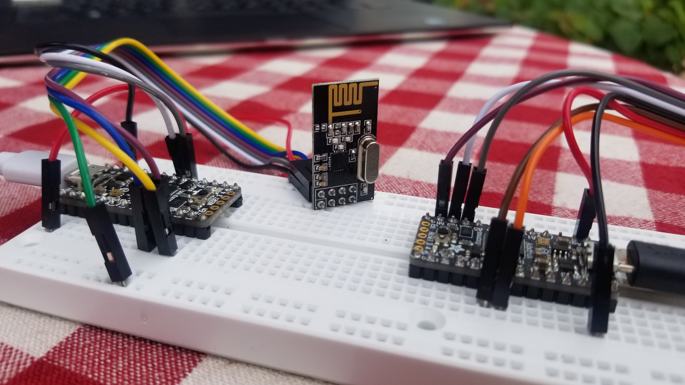
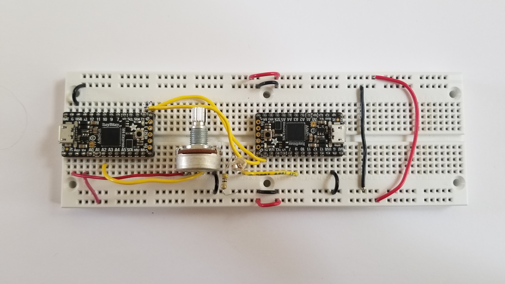
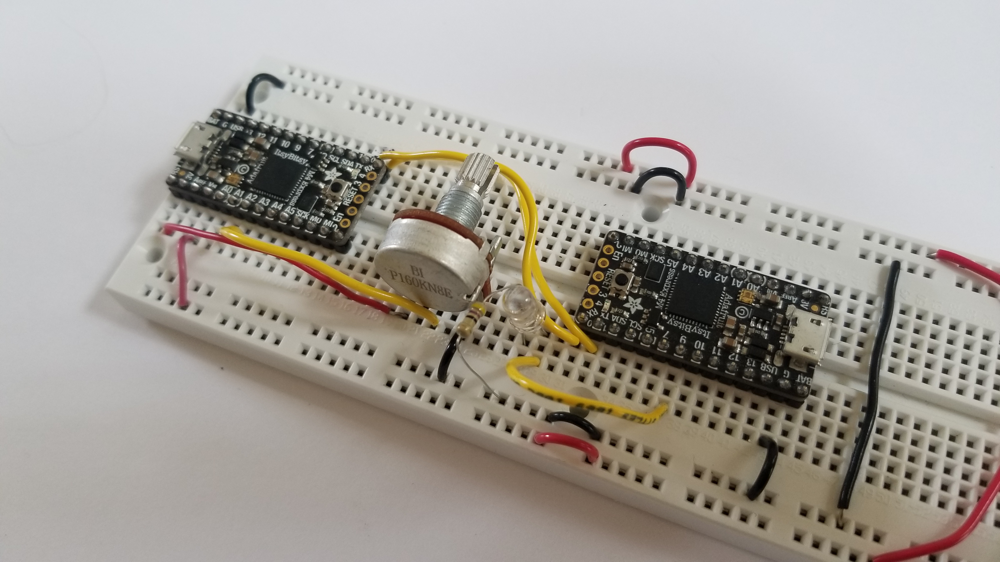
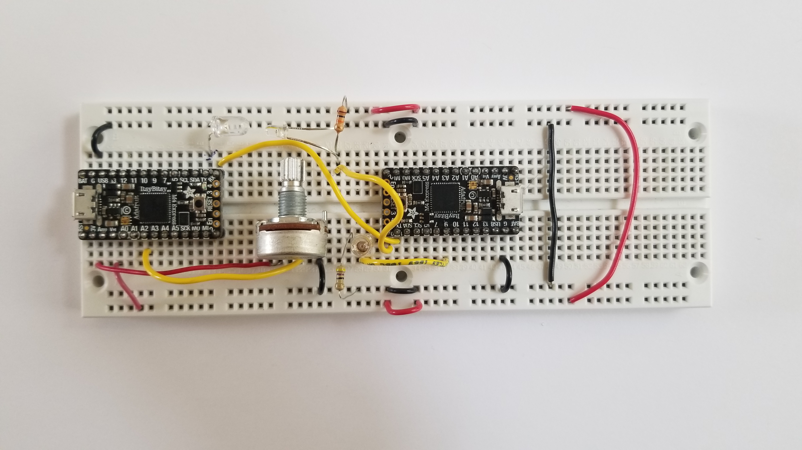
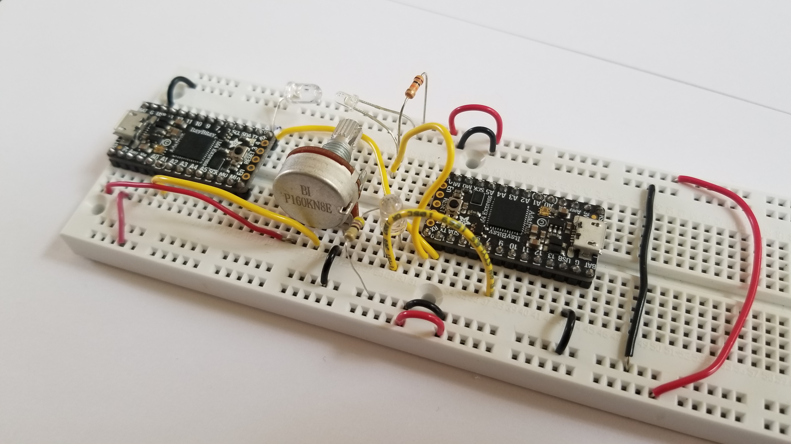

Week 9: Networking and Communication (IoT)
WIRELESS COMMUNICTIONS - RADIO
In order to understand radio communication. I first review serial communication and its protocols from the class website. Check out these links:
Serial communication ,
SPI ,
Radio communication ,
More on radio communication
For a deeper understanding of radio communication, I set up 2 ItsyBitsy boards like so.

Unfortunatley, one of the radio modules failed. The
NRF24L01 chip got really hot immediatly as I plugged the ItsyBitsy into power. Hopeful that the chip was not broken, I double checked the wiring. It all seemed to be good. I plugged the ItsyBitsy into another computer but without better luck, the chip was still burning to the touch. I applied 5V to the Vcc input and grounded the GRND input, seeing that it was getting hot, I can only assume the chip was broken which is causing it to short out.
I was mostly interested in wireless communication for this weeks assignment so check out the last section of this page to see how I satisfied that yearning.
WIRED COMMUNICATION - SERIAL
Used
this tutorial to start off.


In my setup I used a potentiometer to dictate the brightness of an LED. Similar transiever and reciever code was used to program the respective microcontrollers. While dubgging the system, 2 laptops were used allowing for 2 instances of Arduino to open simultaneously with their corresponding serial monitors.
Recieving code:
const int LED_pin = 9;
void setup() {
Serial.begin(0); //for the USB serial devices, this baud rate is meaningless - can be "0"
Serial1.begin(300); //this is the USART SERIAL. On SAM boards, like ItsyBitsy and D11, this is called "Serial1"
pinMode(LED_pin, OUTPUT); // sets the pin as output
}
void loop() {
while (!Serial1.available()) { //wait until serial from UART is available.
}
byte rec_byte = Serial1.read(); //Here is where the incoming byte is read.
Serial.println(rec_byte); //for diagnosing using USB serial
analogWrite(LED_pin , rec_byte);
}
Transmitting code:
const int pot_pin = 2;
const int led_pin = 1;
void setup() {
Serial.begin(0); //for the USB serial devices, this baud rate is meaningless - can be "0"
Serial1.begin(300); //this is the USART SERIAL. On SAM boards, like ItsyBitsy and D11, this is called "Serial1"
}
void loop() {
int pot_value = analogRead(pot_pin);
Serial.println(pot_value/4); //This is for diagnostic purposes
Serial1.write(pot_value/4); //This one is data sent to the other board. divide by four to make the range 0-255.
delay(10);
}
The
key takeaways from building this simple circuit were:
- The output from the RX pin is a value from 0-255 which corresponds to 0-Vcc. In our case that is 0-3.3V. If you send value larger than 255, the reciever will read them in starting from 0 to 255 again. For example 256 from TX would be 0 in the RX, 257 = 1, 28 = 2, and so on. This occurs because in the UART protocol we are only sending 8- bits. Values larger than that will be cut off and only the least significant digits will be sent.
WIRELESS COMMUNCATION - LED + PHOTOTRANSISTOR
I was disappointed that I didn't get the chance to build a wireless communication system. There are alot of cool applications once you can communicate with another microcontroller wirelessly. With this spirit, I decided to explore how to communicate wirelessly without the radio modules. I decided to try to use and LED and a photoresistor. The idea being that the LED would transmit signals by blinking ON and off and the photoresistor would register these as bytes of information. In essence, the LED and photoresistor would take the place of the wire connecting TX to RX in the previous section.
However, this idea had its flaws and I did not get it to work. Here is what I learned and ideas for how to make it work.


The LED flickered a bit which was misleading because it was not actually sending real HIGHs and lows.
The
key takeaways from building this circuit were:
- The LED flickered a bit which was misleading because it was not actually sending real HIGHs and lows.
- The signal from the TX port cannot be delivered through the LED. The frequency at which the signal from the TX port is being transmitted is too fast. The LED interprets this signal in the same way it interprets a PWM wave. It cannot turn ON and off completely. Instead, the light just dims. THe photo resistor on the other hand, can only read in a value from 0 to 255 instead of a fully on or off. the miscommunication comes from when the LED is supposed to be off but instead output a dim light that was over the threshold for the RX to mistakenly read a high (ON). The root of this problem is the high frequency of the TX. I tried defining the baud rate to 300 bits per second but that was still not slow enough.
- To use this setup, the LED should be connected to an analog input. With software, we can detect rising or falling edges instead of lows or highs. In this way, we don't care about the actual output from the LED but instead only the relative change. However, the catch here is that you would have to develop your own protocol which is not ideal and why we like UART - because it is already defined for us!